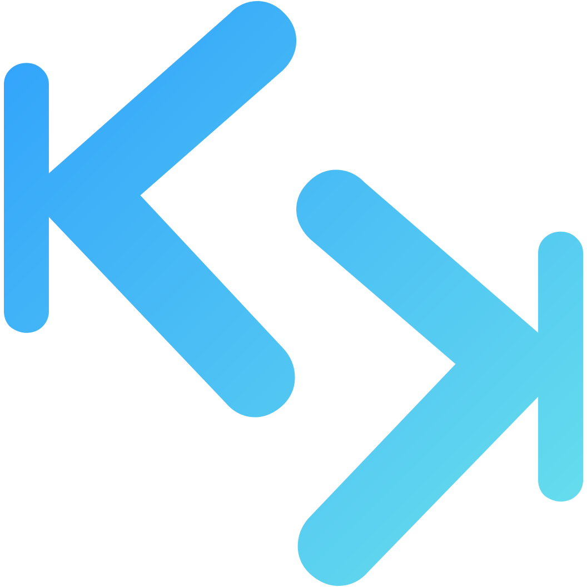

<mat-toolbar color="primary">
    <span class="flex-row">
        
        Kunlatek Quickstart
    </span>
    <span class="spacer"></span>
    <span>
        <button mat-raised-button (click)="signInWithGoogle()">
            
            Entrar com Google 
        </button>
    </span>
</mat-toolbar>

<div class="content-under-toolbar">
    <router-outlet></router-outlet>
</div>